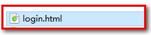
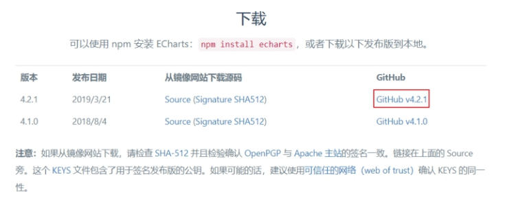
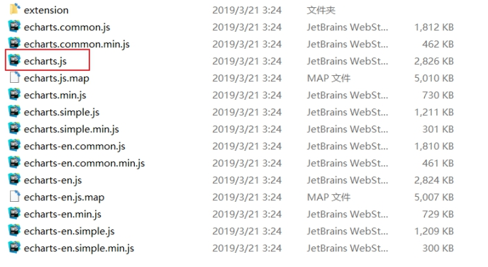
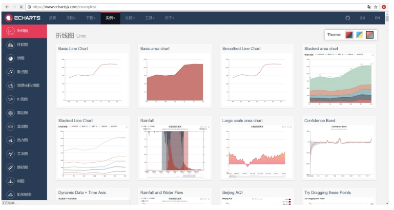
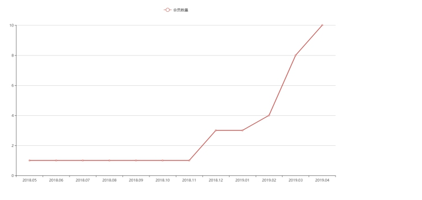
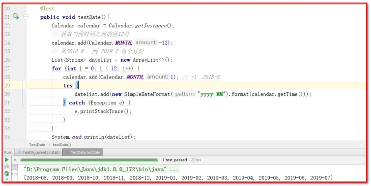

权限控制、图形报表¶
1：掌握Spring Security实现认证的过程
2：掌握Spring Security实现授权的过程
3：了解Echarts
4：掌握Echarts实现会员数量折线图的实现过程
1. 第一章. 在项目中使用Spring Security¶
前面我们已经学习了Spring Security框架的使用方法，本章节我们就需要将Spring Security框架应用到后台系统中进行权限控制，其本质就是认证和授权。
要进行认证和授权需要前面课程中提到的权限模型涉及的7张表支撑，因为用户信息、权限信息、菜单信息、角色信息、关联信息等都保存在这7张表中，也就是这些表中的数据是我们进行认证和授权的依据。所以在真正进行认证和授权之前需要对这些数据进行管理，即我们需要开发如下一些功能：
1、用户数据管理（增删改查、用户关联角色）
2、角色数据管理（增删改查、角色关联权限、角色关联菜单）
3、权限数据管理（增删改查）
鉴于时间关系，我们不再实现这些数据管理的代码开发。我们可以直接将数据导入到数据库中即可。
【导入用户、角色、权限 的初始数据】¶
DROP TABLE IF EXISTS `t_user`;
CREATE TABLE `t_user` (
`id` int(11) NOT NULL AUTO_INCREMENT,
`birthday` date DEFAULT NULL,
`gender` varchar(1) DEFAULT NULL,
`username` varchar(32) DEFAULT NULL,
`password` varchar(256) DEFAULT NULL,
`remark` varchar(32) DEFAULT NULL,
`station` varchar(1) DEFAULT NULL,
`telephone` varchar(11) DEFAULT NULL,
PRIMARY KEY (`id`)
) ENGINE=InnoDB AUTO_INCREMENT=4 DEFAULT CHARSET=utf8;
INSERT INTO `t_user` VALUES ('1', null, null, 'admin', '$2a$10$u/BcsUUqZNWUxdmDhbnoeeobJy6IBsL1Gn/S0dMxI2RbSgnMKJ.4a', null, null, null);
INSERT INTO `t_user` VALUES ('2', null, null, 'xiaoming', '$2a$10$3xW2nBjwBM3rx1LoYprVsemNri5bvxeOd/QfmO7UDFQhW2HRHLi.C', null, null, null);
INSERT INTO `t_user` VALUES ('3', null, null, 'test', '$2a$10$zYJRscVUgHX1wqwu90WereuTmIg6h/JGirGG4SWBsZ60wVPCgtF8W', null, null, null);
DROP TABLE IF EXISTS `t_role`;
CREATE TABLE `t_role` (
`id` int(11) NOT NULL AUTO_INCREMENT,
`name` varchar(32) DEFAULT NULL,
`keyword` varchar(64) DEFAULT NULL,
`description` varchar(128) DEFAULT NULL,
PRIMARY KEY (`id`)
) ENGINE=InnoDB AUTO_INCREMENT=3 DEFAULT CHARSET=utf8;
INSERT INTO `t_role` VALUES ('1', '系统管理员', 'ROLE_ADMIN', null);
INSERT INTO `t_role` VALUES ('2', '导游', 'ROLE_HEALTH_MANAGER', null);
DROP TABLE IF EXISTS `t_user_role`;
CREATE TABLE `t_user_role` (
`user_id` int(11) NOT NULL,
`role_id` int(11) NOT NULL,
PRIMARY KEY (`user_id`,`role_id`),
KEY `FK_Reference_8` (`role_id`),
CONSTRAINT `FK_Reference_7` FOREIGN KEY (`user_id`) REFERENCES `t_user` (`id`),
CONSTRAINT `FK_Reference_8` FOREIGN KEY (`role_id`) REFERENCES `t_role` (`id`)
) ENGINE=InnoDB DEFAULT CHARSET=utf8;
INSERT INTO `t_user_role` VALUES ('1', '1');
INSERT INTO `t_user_role` VALUES ('2', '2');
DROP TABLE IF EXISTS `t_permission`;
CREATE TABLE `t_permission` (
`id` int(11) NOT NULL AUTO_INCREMENT,
`name` varchar(32) DEFAULT NULL,
`keyword` varchar(64) DEFAULT NULL,
`description` varchar(128) DEFAULT NULL,
PRIMARY KEY (`id`)
) ENGINE=InnoDB AUTO_INCREMENT=27 DEFAULT CHARSET=utf8;
INSERT INTO `t_permission` VALUES ('1', '新增自由行', 'TRAVELITEM_ADD', null);
INSERT INTO `t_permission` VALUES ('2', '删除自由行', 'TRAVELITEM_DELETE', null);
INSERT INTO `t_permission` VALUES ('3', '编辑自由行', 'TRAVELITEM_EDIT', null);
INSERT INTO `t_permission` VALUES ('4', '查询自由行', 'TRAVELITEM_QUERY', null);
INSERT INTO `t_permission` VALUES ('5', '新增跟团游', 'TRAVELGROUP_ADD', null);
INSERT INTO `t_permission` VALUES ('6', '删除跟团游', 'TRAVELGROUP_DELETE', null);
INSERT INTO `t_permission` VALUES ('7', '编辑跟团游', 'TRAVELGROUP_EDIT', null);
INSERT INTO `t_permission` VALUES ('8', '查询跟团游', 'TRAVELGROUP_QUERY', null);
INSERT INTO `t_permission` VALUES ('9', '新增套餐', 'SETMEAL_ADD', null);
INSERT INTO `t_permission` VALUES ('10', '删除套餐', 'SETMEAL_DELETE', null);
INSERT INTO `t_permission` VALUES ('11', '编辑套餐', 'SETMEAL_EDIT', null);
INSERT INTO `t_permission` VALUES ('12', '查询套餐', 'SETMEAL_QUERY', null);
INSERT INTO `t_permission` VALUES ('13', '预约设置', 'ORDERSETTING', null);
INSERT INTO `t_permission` VALUES ('14', '查看统计报表', 'REPORT_VIEW', null);
INSERT INTO `t_permission` VALUES ('15', '新增菜单', 'MENU_ADD', null);
INSERT INTO `t_permission` VALUES ('16', '删除菜单', 'MENU_DELETE', null);
INSERT INTO `t_permission` VALUES ('17', '编辑菜单', 'MENU_EDIT', null);
INSERT INTO `t_permission` VALUES ('18', '查询菜单', 'MENU_QUERY', null);
INSERT INTO `t_permission` VALUES ('19', '新增角色', 'ROLE_ADD', null);
INSERT INTO `t_permission` VALUES ('20', '删除角色', 'ROLE_DELETE', null);
INSERT INTO `t_permission` VALUES ('21', '编辑角色', 'ROLE_EDIT', null);
INSERT INTO `t_permission` VALUES ('22', '查询角色', 'ROLE_QUERY', null);
INSERT INTO `t_permission` VALUES ('23', '新增用户', 'USER_ADD', null);
INSERT INTO `t_permission` VALUES ('24', '删除用户', 'USER_DELETE', null);
INSERT INTO `t_permission` VALUES ('25', '编辑用户', 'USER_EDIT', null);
INSERT INTO `t_permission` VALUES ('26', '查询用户', 'USER_QUERY', null);
DROP TABLE IF EXISTS `t_role_permission`;
CREATE TABLE `t_role_permission` (
`role_id` int(11) NOT NULL,
`permission_id` int(11) NOT NULL,
PRIMARY KEY (`role_id`,`permission_id`),
KEY `FK_Reference_12` (`permission_id`),
CONSTRAINT `FK_Reference_11` FOREIGN KEY (`role_id`) REFERENCES `t_role` (`id`),
CONSTRAINT `FK_Reference_12` FOREIGN KEY (`permission_id`) REFERENCES `t_permission` (`id`)
) ENGINE=InnoDB DEFAULT CHARSET=utf8;
INSERT INTO `t_role_permission` VALUES ('1', '1');
INSERT INTO `t_role_permission` VALUES ('2', '1');
INSERT INTO `t_role_permission` VALUES ('1', '2');
INSERT INTO `t_role_permission` VALUES ('2', '2');
INSERT INTO `t_role_permission` VALUES ('1', '3');
INSERT INTO `t_role_permission` VALUES ('2', '3');
INSERT INTO `t_role_permission` VALUES ('1', '4');
INSERT INTO `t_role_permission` VALUES ('2', '4');
INSERT INTO `t_role_permission` VALUES ('1', '5');
INSERT INTO `t_role_permission` VALUES ('2', '5');
INSERT INTO `t_role_permission` VALUES ('1', '6');
INSERT INTO `t_role_permission` VALUES ('2', '6');
INSERT INTO `t_role_permission` VALUES ('1', '7');
INSERT INTO `t_role_permission` VALUES ('2', '7');
INSERT INTO `t_role_permission` VALUES ('1', '8');
INSERT INTO `t_role_permission` VALUES ('2', '8');
INSERT INTO `t_role_permission` VALUES ('1', '9');
INSERT INTO `t_role_permission` VALUES ('2', '9');
INSERT INTO `t_role_permission` VALUES ('1', '10');
INSERT INTO `t_role_permission` VALUES ('2', '10');
INSERT INTO `t_role_permission` VALUES ('1', '11');
INSERT INTO `t_role_permission` VALUES ('2', '11');
INSERT INTO `t_role_permission` VALUES ('1', '12');
INSERT INTO `t_role_permission` VALUES ('2', '12');
INSERT INTO `t_role_permission` VALUES ('1', '13');
INSERT INTO `t_role_permission` VALUES ('2', '13');
INSERT INTO `t_role_permission` VALUES ('1', '14');
INSERT INTO `t_role_permission` VALUES ('2', '14');
INSERT INTO `t_role_permission` VALUES ('1', '15');
INSERT INTO `t_role_permission` VALUES ('1', '16');
INSERT INTO `t_role_permission` VALUES ('1', '17');
INSERT INTO `t_role_permission` VALUES ('1', '18');
INSERT INTO `t_role_permission` VALUES ('1', '19');
INSERT INTO `t_role_permission` VALUES ('1', '20');
INSERT INTO `t_role_permission` VALUES ('1', '21');
INSERT INTO `t_role_permission` VALUES ('1', '22');
INSERT INTO `t_role_permission` VALUES ('1', '23');
INSERT INTO `t_role_permission` VALUES ('1', '24');
INSERT INTO `t_role_permission` VALUES ('1', '25');
INSERT INTO `t_role_permission` VALUES ('1', '26');
【目标】¶
在美年健康的项目中使用SpringSecurity完成认证和授权
【路径】¶
1：导入SpringSecurity环境
（1）pom.xml中添加依赖
（2）web.xml添加代理过滤器
2：实现认证和授权
（1）认证：SpringSecurityUserService.java
（2）创建Service类、Dao接口类、Mapper映射文件
（3）springmvc.xml（dubbo注解扫描范围扩大）
（4）spring-security.xml
（5）springmvc.xml（导入spring-security.xml）
（6）TravelItemController类（@PreAuthorize("hasAuthority('CHECKITEM_ADD')")：完成权限）
（7）travelitem.html（如果没有权限，可以提示错误信息）
（8）导入login.html测试登录
3：显示用户名
4：用户退出
【讲解】¶
1.1. 导入Spring Security环境¶
【路径】
1：pom.xml导入坐标
2：web.xml添加代理过滤器
1.1.1. 第一步：pom.xml导入坐标¶
在meinian_parent父工程的pom.xml中导入Spring Security的maven坐标（已经引入）
<dependency>
<groupId>org.springframework.security</groupId>
<artifactId>spring-security-web</artifactId>
<version>${spring.security.version}</version>
</dependency>
<dependency>
<groupId>org.springframework.security</groupId>
<artifactId>spring-security-config</artifactId>
<version>${spring.security.version}</version>
</dependency>
1.1.2. 第二步：web.xml添加代理过滤器¶
在 meinian_web工程的web.xml文件中配置用于整合Spring Security框架的过滤器DelegatingFilterProxy
<filter>
<!--
DelegatingFilterProxy用于整合第三方框架（代理过滤器，非真正的过滤器，真正的过滤器需要在spring的配置文件）
整合Spring Security时过滤器的名称必须为springSecurityFilterChain，
否则会抛出NoSuchBeanDefinitionException异常
-->
<filter-name>springSecurityFilterChain</filter-name>
<filter-class>org.springframework.web.filter.DelegatingFilterProxy</filter-class>
</filter>
<filter-mapping>
<filter-name>springSecurityFilterChain</filter-name>
<url-pattern>/*</url-pattern>
</filter-mapping>
#### 1.1.3 第三步 ： sql语句
# 1 使用登录名查询用户信息
SELECT * FROM t_user WHERE username = 'admin'
# 2 传递用户id查询角色集合
SELECT r.* FROM t_role r,t_user_role ur WHERE ur.role_id = r.id AND ur.user_id = 1
# 3 传递角色id查询权限集合
SELECT p.* FROM t_permission p,t_role_permission rp WHERE p.id = rp.permission_id AND rp.role_id = 1
1.2. 实现认证和授权¶
1.2.1. 第一步：SpringSecurityUserService.java¶
在meinian_web工程中按照Spring Security框架要求提供SpringSecurityUserService，并且实现UserDetailsService接口
package com.atguigu.security;
import com.alibaba.dubbo.config.annotation.Reference;
import com.atguigu.pojo.Permission;
import com.atguigu.pojo.Role;
import com.atguigu.service.UserService;
import org.springframework.security.core.GrantedAuthority;
import org.springframework.security.core.authority.SimpleGrantedAuthority;
import org.springframework.security.core.userdetails.User;
import org.springframework.security.core.userdetails.UserDetails;
import org.springframework.security.core.userdetails.UserDetailsService;
import org.springframework.security.core.userdetails.UsernameNotFoundException;
import org.springframework.stereotype.Component;
import java.util.ArrayList;
import java.util.List;
@Component
public class SpringSecurityUserService implements UserDetailsService {
@Reference //注意：此处要通过dubbo远程调用用户服务
private UserService userService;
//根据用户名查询用户信息
public UserDetails loadUserByUsername(String username) throws UsernameNotFoundException {
//远程调用用户服务，根据用户名查询用户信息
com.atguigu.pojo.User user = userService.findUserByUsername(username);
if(user == null){
//用户名不存在，抛出异常UsernameNotFoundException
return null;
}
List<GrantedAuthority> list = new ArrayList<GrantedAuthority>();
Set<Role> roles = user.getRoles();
for(Role role : roles){
Set<Permission> permissions = role.getPermissions();
for(Permission permission : permissions){
//授权
list.add(new SimpleGrantedAuthority(permission.getKeyword()));
}
}
/**
* User()
* 1：指定用户名
* 2：指定密码（SpringSecurity会自动对密码进行校验）
* 3：传递授予的角色和权限
*/
UserDetails userDetails = new User(username,user.getPassword(),list);
return userDetails;
}
}
使用debug跟踪调试，查看user。
1.2.2. 第二步：Service、Dao接口、Mapper映射文件¶
创建UserService服务接口、服务实现类、Dao接口、Mapper映射文件等
【路径】
1：UserService.java接口
2：UserServiceImpl.java类
3：UserDao.java（使用用户id查询用户）
4：RoleDao.java（使用用户id查询角色集合）
5：PermissionDao.java（使用角色id查询权限集合）
6：UserDao.xml（使用用户id查询用户）
7：RoleDao.xml（使用用户id查询角色集合）
8：PermissionDao.xml（使用角色id查询权限集合）
【讲解】
1：服务接口
package com.atguigu.service;
import com.atguigu.pojo.User;
/**
* 用户服务接口
*/
public interface UserService {
User findUserByUsername(String username);
}
2：服务实现类
package com.atguigu.service;
import com.alibaba.dubbo.config.annotation.Service;
import com.atguigu.dao.UserDao;
import com.atguigu.pojo.User;
import org.springframework.beans.factory.annotation.Autowired;
import org.springframework.transaction.annotation.Transactional;
@Service(interfaceClass = UserService.class)
@Transactional
public class UserServiceImpl implements UserService {
@Autowired
private UserDao userDao;
public User findUserByUsername(String username) {
User user = userDao.findUserByUsername(username);
return user;
}
}
3：Dao接口
（1）UserDao
package com.atguigu.dao;
import com.atguigu.pojo.User;
import org.springframework.stereotype.Repository;
/**
* 持久层Dao接口
*/
@Repository
public interface UserDao {
User findUserByUsername(String username);
}
（2）RoleDao
package com.atguigu.dao;
import com.atguigu.pojo.Role;
import org.springframework.stereotype.Repository;
import java.util.Set;
/**
* 持久层Dao接口
*/
@Repository
public interface RoleDao {
Set<Role> findRolesByUserId(Integer userId);
}
（3）PermissionDao
package com.atguigu.dao;
import com.atguigu.pojo.Permission;
import org.springframework.stereotype.Repository;
import java.util.Set;
/**
* 持久层Dao接口
*/
@Repository
public interface PermissionDao {
Set<Permission> findPermissionsByRoleId(Integer roleId);
}
4：Mapper映射文件
（1）UserDao.xml
<?xml version="1.0" encoding="UTF-8" ?>
<!DOCTYPE mapper PUBLIC "-//mybatis.org//DTD Mapper 3.0//EN"
"http://mybatis.org/dtd/mybatis-3-mapper.dtd" >
<mapper namespace="com.atguigu.dao.UserDao">
<resultMap id="userMap" type="com.atguigu.pojo.User">
<id column="id" property="id"></id>
<result column="birthday" property="birthday"></result>
<result column="gender" property="gender"></result>
<result column="username" property="username"></result>
<result column="password" property="password"></result>
<result column="remark" property="remark"></result>
<result column="station" property="station"></result>
<result column="telephone" property="telephone"></result>
<collection property="roles" column="id" select="com.atguigu.dao.RoleDao.findRolesByUserId"></collection>
</resultMap>
<select id="findUserByUsername" parameterType="string" resultMap="userMap">
select u.* from t_user u where username = #{username}
</select>
</mapper>
（2）RoleDao.xml
<?xml version="1.0" encoding="UTF-8" ?>
<!DOCTYPE mapper PUBLIC "-//mybatis.org//DTD Mapper 3.0//EN"
"http://mybatis.org/dtd/mybatis-3-mapper.dtd" >
<mapper namespace="com.atguigu.dao.RoleDao">
<resultMap id="roleMap" type="role">
<id column="id" property="id"></id>
<result column="name" property="name"></result>
<result column="keyword" property="keyword"></result>
<result column="description" property="description"></result>
<collection property="permissions" column="id" select="com.atguigu.dao.PermissionDao.findPermissionsByRoleId"></collection>
</resultMap>
<select id="findRolesByUserId" parameterType="int" resultMap="roleMap">
SELECT r.* FROM t_role r,t_user_role ur WHERE r.id = ur.role_id AND ur.user_id = #{userId}
</select>
</mapper>
（3）PermissionDao.xml
<?xml version="1.0" encoding="UTF-8" ?>
<!DOCTYPE mapper PUBLIC "-//mybatis.org//DTD Mapper 3.0//EN"
"http://mybatis.org/dtd/mybatis-3-mapper.dtd" >
<mapper namespace="com.atguigu.dao.PermissionDao">
<select id="findPermissionsByRoleId" parameterType="int" resultType="com.atguigu.pojo.Permission">
SELECT p.* FROM t_permission p,t_role_permission rp WHERE p.id = rp.permission_id AND rp.role_id = #{roleId}
</select>
</mapper>
1.2.3. 第三步：springmvc.xml¶
修改meinian_web工程中的springmvc.xml文件，修改dubbo批量扫描的包路径
之前的包扫描
<!--批量扫描-->
<dubbo:annotation package="com.atguigu.controller" />
现在的包扫描
<!--批量扫描-->
<dubbo:annotation package="com.atguigu" />
**注意：**此处原来扫描的包为com.atguigu.controller，现在改为com.atguigu包的目的是需要将我们上面定义的SpringSecurityUserService也扫描到，因为在SpringSecurityUserService的loadUserByUsername方法中需要通过dubbo远程调用名称为UserService的服务。
1.2.4. 第四步：spring-security.xml¶
【路径】
1：定义哪些链接可以放行
2：定义哪些链接不可以放行，即需要有角色、权限才可以放行
3：认证管理，定义登录账号名和密码，并授予访问的角色、权限
4：设置在页面可以通过iframe访问受保护的页面，默认为不允许访问，需要添加security:frame-options policy="SAMEORIGIN"
【讲解】
在meinian_web工程中提供spring-security.xml配置文件
<?xml version="1.0" encoding="UTF-8"?>
<beans xmlns="http://www.springframework.org/schema/beans"
xmlns:xsi="http://www.w3.org/2001/XMLSchema-instance"
xmlns:context="http://www.springframework.org/schema/context"
xmlns:dubbo="http://code.alibabatech.com/schema/dubbo"
xmlns:mvc="http://www.springframework.org/schema/mvc"
xmlns:security="http://www.springframework.org/schema/security"
xsi:schemaLocation="http://www.springframework.org/schema/beans
http://www.springframework.org/schema/beans/spring-beans.xsd
http://www.springframework.org/schema/mvc
http://www.springframework.org/schema/mvc/spring-mvc.xsd
http://code.alibabatech.com/schema/dubbo
http://code.alibabatech.com/schema/dubbo/dubbo.xsd
http://www.springframework.org/schema/context
http://www.springframework.org/schema/context/spring-context.xsd
http://www.springframework.org/schema/security
http://www.springframework.org/schema/security/spring-security.xsd">
<!--一：定义哪些链接可以放行-->
<!--
http：用于定义相关权限控制
指定哪些资源不需要进行权限校验，可以使用通配符
-->
<security:http security="none" pattern="/js/**" />
<security:http security="none" pattern="/css/**" />
<security:http security="none" pattern="/img/**" />
<security:http security="none" pattern="/plugins/**" />
<security:http security="none" pattern="/login.html"></security:http>
<!--开启注解方式权限控制-->
<security:global-method-security pre-post-annotations="enabled" />
<!--
二：定义哪些链接不可以放行，即需要有角色、权限才可以放行
http：用于定义相关权限控制
auto-config：是否自动配置
设置为true时框架会提供默认的一些配置，例如提供默认的登录页面、登出处理等
设置为false时需要显示提供登录表单配置，否则会报错
use-expressions：用于指定intercept-url中的access属性是否使用表达式
-->
<security:http auto-config="true" use-expressions="true">
<!--只要认证通过就可以访问-->
<!--
intercept-url：定义一个拦截规则
pattern：对哪些url进行权限控制
access：在请求对应的URL时需要什么权限，默认配置时它应该是一个以逗号分隔的角色列表，
请求的用户只需拥有其中的一个角色就能成功访问对应的URL
isAuthenticated()：需要经过认证后才能访问（不是匿名用户）
-->
<security:intercept-url pattern="/pages/**" access="isAuthenticated()" />
<!--
form-login：定义表单登录信息
-->
<security:form-login login-page="/login.html"
username-parameter="username"
password-parameter="password"
login-processing-url="/login.do"
default-target-url="/pages/main.html"
authentication-failure-url="/login.html"
always-use-default-target="true"
/>
<!--
csrf：对应CsrfFilter过滤器
disabled：是否启用CsrfFilter过滤器，如果使用自定义登录页面需要关闭此项，否则登录操作会被禁用（403）
-->
<security:csrf disabled="true"></security:csrf>
<!--
logout：退出登录
logout-url：退出登录操作对应的请求路径
logout-success-url：退出登录后的跳转页面
-->
<security:logout logout-url="/logout.do"
logout-success-url="/login.html" invalidate-session="true"/>
</security:http>
<!--配置密码加密对象-->
<bean id="passwordEncoder"
class="org.springframework.security.crypto.bcrypt.BCryptPasswordEncoder" />
<!--
三：认证管理，定义登录账号名和密码，并授予访问的角色、权限
authentication-manager：认证管理器，用于处理认证操作
-->
<security:authentication-manager>
<!--
authentication-provider：认证提供者，执行具体的认证逻辑
-->
<security:authentication-provider user-service-ref="springSecurityUserService">
<!--指定密码加密策略-->
<security:password-encoder ref="passwordEncoder"></security:password-encoder>
</security:authentication-provider>
</security:authentication-manager>
</beans>
这里注意：如果出现以下问题
使用下面的配置，在spring-security.xml中添加。
放置到
<security:headers>
<!--设置在页面可以通过iframe访问受保护的页面，默认为不允许访问-->
<security:frame-options policy="SAMEORIGIN"></security:frame-options>
</security:headers>
是因为我们在main.html中定义：如果不配置springSecurity会认为iframe访问的html页面是收保护的页面，不允许访问。
<el-container>
<iframe name="right" class="el-main" src="travelitem.html" width="100%" height="580px" frameborder="0"></iframe>
</el-container>
备注：
1.2.5. 第五步：springmvc.xml¶
在springmvc.xml文件中引入spring-security.xml文件
<import resource="classpath:spring-security.xml"></import>
1.2.6. 第六步：TravelItemController类¶
在Controller的方法上加入权限控制注解，此处以 TravelItemController 为例
package com.atguigu.controller;
import com.alibaba.dubbo.config.annotation.Reference;
import com.atguigu.constant.MessageConstant;
import com.atguigu.entity.PageResult;
import com.atguigu.entity.QueryPageBean;
import com.atguigu.entity.Result;
import com.atguigu.pojo.TravelItem;
import com.atguigu.service.TravelItemService;
import com.github.pagehelper.Page;
import org.springframework.security.access.prepost.PreAuthorize;
import org.springframework.ui.freemarker.FreeMarkerTemplateUtils;
import org.springframework.web.bind.annotation.RequestBody;
import org.springframework.web.bind.annotation.RequestMapping;
import org.springframework.web.bind.annotation.RestController;
import java.util.List;
/**
* TravelItemController
*
* @Author: 马伟奇
* @CreateTime: 2020-01-16
* @Description:
* @RestController = @Controller + @ResponseBody
*
*
*/
@RestController
@RequestMapping("/travelItem")
public class TravelItemController {
@Reference
private TravelItemService travelItemService;
@RequestMapping("/findAll")
public Result findAll(){
List<TravelItem> lists = travelItemService.findAll();
return new Result(true,MessageConstant.QUERY_TRAVELITEM_SUCCESS,lists);
}
@RequestMapping("/edit")
@PreAuthorize("hasAuthority('TRAVELITEM_EDIT')")//权限校验
public Result edit(@RequestBody TravelItem travelItem){
travelItemService.edit(travelItem);
return new Result(true,MessageConstant.EDIT_TRAVELITEM_SUCCESS);
}
@RequestMapping("/findById")
public Result findById(Integer id){
TravelItem travelItem = travelItemService.findById(id);
return new Result(true,MessageConstant.QUERY_TRAVELITEM_SUCCESS,travelItem);
}
@RequestMapping("/delete")
@PreAuthorize("hasAuthority('TRAVELITEM_DELETE')")//权限校验，使用TRAVELITEM_DELETE123测试
public Result delete(Integer id){
try {
travelItemService.delete(id);
return new Result(true,MessageConstant.DELETE_TRAVELITEM_SUCCESS);
}catch (RuntimeException e){
return new Result(false,MessageConstant.DELETE_TRAVELITEM_FAIL);
}catch (Exception e) {
e.printStackTrace();
}
return new Result(false,MessageConstant.DELETE_TRAVELITEM_FAIL);
}
@RequestMapping("/findPage")
@PreAuthorize("hasAuthority('TRAVELITEM_QUERY')")//权限校验
public PageResult findPage(@RequestBody QueryPageBean queryPageBean){
PageResult pageResult = travelItemService.findPage(queryPageBean.getCurrentPage(),
queryPageBean.getPageSize(),queryPageBean.getQueryString());
return pageResult;
}
//@RequestBody:表示对象和json数据进行互转
@RequestMapping("/add")
@PreAuthorize("hasAuthority('TRAVELITEM_ADD')")//权限校验
public Result add(@RequestBody TravelItem travelItem){
try {
// 增加，更新，删除 ，就不需要往data里面添加数据
// 查询：list 对象
travelItemService.add(travelItem);
Result result = new Result(true, MessageConstant.ADD_TRAVELITEM_SUCCESS);
return result;
} catch (Exception e) {
e.printStackTrace();
}
return new Result(false, MessageConstant.ADD_TRAVELITEM_SUCCESS);
}
}
1.2.7. 第七步：travelitem.html¶
修改页面，没有权限时提示信息设置，此处以 travelitem.html 中的handleDelete方法为例。
如果权限抛出异常，可以指定showMessage®方法进行处理。
// 删除
handleDelete(row) {
// alert(row.id);
this.$confirm("确认删除当前选中记录吗？","提示",{type:'warning'}).then(()=>{
//点击确定按钮时只需此处代码
// alert('用户点击的是确定按钮');
axios.get("/travelItem/delete.do?id=" + row.id).then((res)=> {
if(res.data.flag){
//删除成功
this.$message({
message: res.data.message,
type: 'success'
});
//调用分页，获取最新分页数据
this.findPage();
}else{
//删除失败
this.$message.error(res.data.message);
}
}).catch((error)=>{
this.showMessage(error);
});
}).catch(()=> {
//点击取消按钮执行此代码
this.$message('操作已取消');
});
},
//权限不足提示
showMessage(r){
if(r == 'Error: Request failed with status code 403'){
//权限不足
this.$message.error('无访问权限');
return;
}else{
this.$message.error('未知错误');
return;
}
}
1.2.8. 第八步：导入login.html页面¶


此时login.html是可放行的页面，而pages下的页面必须认证之后才能访问的页面
1.3. 显示用户名¶
【路径】
1：引入js
2：定义username属性
3：使用钩子函数，调用ajax，查询登录用户（从SpringSecurity中获取），赋值username属性
4：修改页面，使用{{username}}显示用户信息
【讲解】
前面我们已经完成了认证和授权操作，如果用户认证成功后需要在页面展示当前用户的用户名。Spring Security在认证成功后会将用户信息保存到框架提供的上下文对象中，所以此处我们就可以调用Spring Security框架提供的API获取当前用户的username并展示到页面上。
实现步骤：
第一步：在main.html页面中修改，定义username模型数据基于VUE的数据绑定展示用户名，发送ajax请求获取username
（1）：引入js
<script src="../js/axios-0.18.0.js"></script>
（2）：定义username属性
（3）：使用钩子函数，调用ajax
<script>
new Vue({
el: '#app',
data:{
menuList:[
{
"path": "1",
"title": "旅行社",
"icon":"fa-dashboard",
"children": []
},
{
"path": "2",
"title": "旅行管理",
"icon":"fa-user-md",
"children": [
{
"path": "/2-1",
"title": "会员档案",
"linkUrl":"member.html",
"children":[]
},
{
"path": "/2-2",
"title": "会员信息上传",
"children":[]
},
{
"path": "/2-3",
"title": "会员统计",
"linkUrl":"all-item-list.html",
"children":[]
},
]
},
{
"path": "3",
"title": "旅游后台",
"icon":"fa-tty",
"children": [
{
"path": "/3-1",
"title": "旅游预约列表",
"linkUrl":"ordersettinglist.html",
"children":[]
},
{
"path": "/3-2",
"title": "旅游预约",
"linkUrl":"ordersetting.html",
"children":[]
},
{
"path": "/3-3",
"title": "套餐游",
"linkUrl":"setmeal.html",
"children":[]
},
{
"path": "/3-4",
"title": "跟团游",
"linkUrl":"travelgroup.html",
"children":[]
},
{
"path": "/3-5",
"title": "自由行",
"linkUrl":"travelitem.html",
"children":[]
},
]
},
{
"path": "4",
"title": "旅游评估",
"icon":"fa-stethoscope",
"children":[
{
"path": "/4-1",
"title": "大家一起游",
"linkUrl":"all-medical-list.html",
"children":[]
},
]
},
{
"path": "5", //菜单项所对应的路由路径
"title": "信息系统", //菜单项名称
"icon":"fa-heartbeat",
"children":[//是否有子菜单，若没有，则为[]
{
"path": "/5-1",
"title": "注册会员按月份数量统计",
"linkUrl":"report_member.html",
"children":[]
}
]
}
],
username:null // 显示用户名
},
//发送请求获取当前登录用户的用户名
created:function () {
//发送请求获取当前登录用户的用户名
// 返回Result(flag,message,data)，data放置User对象
axios.get("/user/getUsername.do").then((response)=>{
if(response.data.flag){
this.username = response.data.data.username;
}
}).catch((error)=>{
this.$message.error("获取用户名失败");
})
}
});
$(function() {
var wd = 200;
$(".el-main").css('width', $('body').width() - wd + 'px');
});
</script>
（4）：修改页面
<div class="avatar-wrapper">
<img src="../img/user2-160x160.jpg" class="user-avatar">
<!--显示用户名-->
{{username}}
</div>
第二步：创建UserController并提供getUsername方法
Spring Security使用一个Authentication对象来描述当前用户的相关信息。这个Authentication对象不需要我们自己去创建，在与系统交互的过程中，Spring Security会自动为我们创建相应的Authentication对象，然后赋值给当前的SecurityContext。通过Authentication.getPrincipal()可以获取到代表当前用户的信息。
package com.atguigu.controller;
import com.alibaba.dubbo.config.annotation.Reference;
import com.atguigu.constant.MessageConstant;
import com.atguigu.entity.PageResult;
import com.atguigu.entity.QueryPageBean;
import com.atguigu.entity.Result;
import com.atguigu.service.UserService;
import org.springframework.security.core.context.SecurityContextHolder;
import org.springframework.security.core.userdetails.User;
import org.springframework.web.bind.annotation.RequestBody;
import org.springframework.web.bind.annotation.RequestMapping;
import org.springframework.web.bind.annotation.RestController;
import org.springframework.security.core.userdetails.User;
import java.util.List;
/**
* CheckGroupController
*
* @Author: 马伟奇
* @CreateTime: 2019-12-19
* @Description:
*/
@RestController
@RequestMapping("/user")
public class UserController {
@Reference
private UserService userService;
//获取当前登录用户的用户名
@RequestMapping("/getUsername")
public Result getUsername()throws Exception{
try{
user =SecurityContextHolder.getContext().getAuthentication().getPrincipal();
return new Result(true, MessageConstant.GET_USERNAME_SUCCESS,user.getUsername());
}catch (Exception e){
return new Result(false, MessageConstant.GET_USERNAME_FAIL);
}
}
}
通过debug调试可以看到Spring Security框架在其上下文中保存的用户相关信息：
显示当前登录人：
1.4. 用户退出¶
【路径】
1：在main.html中提供的退出菜单上加入超链接
2：在spring-security.xml文件中配置
【讲解】
第一步：在main.html中提供的退出菜单上加入超链接
<el-dropdown-item divided>
<span style="display:block;"><a href="/logout.do">退出</a></span>
</el-dropdown-item>
第二步：在spring-security.xml文件中配置
<!--
logout：退出登录
logout-url：退出登录操作对应的请求路径
logout-success-url：退出登录后的跳转页面
-->
<security:logout logout-url="/logout.do"
logout-success-url="/login.html" invalidate-session="true"/>
【小结】¶
1：导入SpringSecurity环境
（1）pom.xml中添加依赖
（2）web.xml添加代理过滤器
2：实现认证和授权
（1）认证：SpringSecurityUserService.java，实现UserDetailsService接口
（2）创建Service类、Dao接口类、Mapper映射文件（使用用户名查询当前用户信息，包括角色集合和权限集合）
（3）springmvc.xml（dubbo注解扫描范围扩大）
（4）spring-security.xml（重点）
（5）springmvc.xml（导入spring-security.xml）
（6）CheckItemController类（@PreAuthorize("hasAuthority('CHECKITEM_ADD')")：对类中的方法完成权限控制）
（7）checkitem.html（如果没有权限，可以提示错误信息，通过catch模块提示）
（8）导入login.html测试登录
3：显示用户名
从SecurityContextHolder对象中获取认证的用户信息
@RequestMapping(value = "/getUsername")
public Result getUsername(){
try {
// 从SpringSecurity中获取认证用户的信息
User user = (User)SecurityContextHolder.getContext().getAuthentication().getPrincipal();
return new Result(true, MessageConstant.GET_USERNAME_SUCCESS,user.getUsername());
} catch (Exception e) {
e.printStackTrace();
return new Result(false, MessageConstant.GET_USERNAME_FAIL);
}
}
4：用户退出
2. 第二章. 图形报表ECharts¶
jfreechar（api编程）→HighChart报表→百度Echarts
【目标】¶
了解Echarts
【路径】¶
1：ECharts简介
2：5分钟上手ECharts
3：查看ECharts官方实例
【讲解】¶
2.1. ECharts简介¶
ECharts缩写来自Enterprise Charts，商业级数据图表，是百度的一个开源的使用JavaScript实现的数据可视化工具，可以流畅的运行在 PC 和移动设备上，兼容当前绝大部分浏览器（IE8/9/10/11，Chrome，Firefox，Safari等），底层依赖轻量级的矢量图形库 ZRender，提供直观、交互丰富、可高度个性化定制的数据可视化图表。
下载地址：https://echarts.baidu.com/download.html

下载完成可以得到如下文件：
解压上面的zip文件：
我们只需要将dist目录下的echarts.js文件（已经压缩）引入到页面上就可以使用了

2.2. 5分钟上手ECharts¶
我们可以参考官方提供的5分钟上手ECharts文档感受一下ECharts的使用方式，地址如下：
https://www.echartsjs.com/tutorial.html#5%20%E5%88%86%E9%92%9F%E4%B8%8A%E6%89%8B%20ECharts
第一步：在meinian_web中创建html页面并引入echarts.js文件

echartsDemo.html
<!DOCTYPE html>
<html lang="en">
<head>
<meta charset="UTF-8">
<title>Title</title>
</head>
<!-- 引入 ECharts 文件 -->
<script src="js/echarts.js"></script>
<body>
</body>
</html>
第二步：在页面中准备一个具备宽高的DOM容器。
<body>
<!-- 为 ECharts 准备一个具备大小（宽高）的 DOM -->
<div id="main" style="width: 600px;height:400px;"></div>
</body>
第三步：通过echarts.init方法初始化一个 echarts 实例并通过setOption方法生成一个简单的柱状图
<script type="text/javascript">
// 基于准备好的dom，初始化echarts实例
var myChart = echarts.init(document.getElementById('main'));
// 指定图表的配置项和数据
var option = {
title: {
text: 'ECharts 入门示例'
},
tooltip: {},
legend: {
data:['销量']
},
xAxis: {
data: ["衬衫","羊毛衫","雪纺衫","裤子","高跟鞋","袜子"]
},
yAxis: {},
series: [{
name: '销量',
type: 'bar',
data: [5, 20, 36, 10, 10, 20]
}]
};
// 使用刚指定的配置项和数据显示图表。
myChart.setOption(option);
</script>
效果如下：

2.3. 查看ECharts官方实例¶
ECharts提供了很多官方实例，我们可以通过这些官方实例来查看展示效果和使用方法。
官方实例地址：https://www.echartsjs.com/examples/

可以点击具体的一个图形会跳转到编辑页面，编辑页面左侧展示源码（js部分源码），右侧展示图表效果，如下：
要查看完整代码可以点击右下角的Download按钮将完整页面下载到本地。
通过官方案例我们可以发现，使用ECharts展示图表效果，关键点在于确定此图表所需的数据格式，然后按照此数据格式提供数据就可以了，我们无须关注效果是如何渲染出来的。
在实际应用中，我们要展示的数据往往存储在数据库中，所以我们可以发送ajax请求获取数据库中的数据并转为图表所需的数据即可。
【小结】¶
1：ECharts简介
- ECharts百度开发的一套商业报表工具(库)
2：5分钟上手ECharts
3：查看ECharts官方实例
学习方法
- 看官网, 关注案例，无需关注api，根据项目需求，选择合适报表
3. 第三章. 会员数量折线图¶
【目标】¶
使用ECharts实现注册会员数量折线图
【路径】¶
1：需求分析
2：前台代码
（1）导入ECharts库
（2）参考官方实例导入折线图
3：后台代码
（1）ReportController类
（2）MemberService服务接口
（3）MemberServiceImpl服务实现类
（4）MemberDao接口
（5）Mapper映射文件（MemberDao.xml）
【讲解】¶
3.1. 需求分析¶
会员信息是旅游机构的核心数据，其会员数量和增长数量可以反映出机构的部分运营情况。通过折线图可以直观的反映出会员数量的增长趋势。本章节我们==需要展示过去一年时间内每个月的会员总数据量==。展示效果如下图：

导入sql语句
DROP TABLE IF EXISTS `t_member`;
CREATE TABLE `t_member` (
`id` int(11) NOT NULL AUTO_INCREMENT,
`fileNumber` varchar(32) DEFAULT NULL,
`name` varchar(32) DEFAULT NULL,
`sex` varchar(8) DEFAULT NULL,
`idCard` varchar(18) DEFAULT NULL,
`phoneNumber` varchar(11) DEFAULT NULL,
`regTime` date DEFAULT NULL,
`password` varchar(32) DEFAULT NULL,
`email` varchar(32) DEFAULT NULL,
`birthday` date DEFAULT NULL,
`remark` varchar(128) DEFAULT NULL,
PRIMARY KEY (`id`)
) ENGINE=InnoDB AUTO_INCREMENT=93 DEFAULT CHARSET=utf8;
INSERT INTO `t_member` VALUES ('82', null, '小明', '1', '123456789000999999', '18544279942', '2019-03-08', null, null, null, null);
INSERT INTO `t_member` VALUES ('83', null, '美丽', '1', '132333333333333', '13412345678', '2019-03-11', null, null, null, null);
INSERT INTO `t_member` VALUES ('84', null, '小星星', null, null, '18343569942', '2019-03-13', null, null, null, null);
INSERT INTO `t_member` VALUES ('85', null, '小强', null, null, 18344249942, '2019-03-06', null, null, null, null);
INSERT INTO `t_member` VALUES ('86', null, '红康', null, null, 18544579942, '2019-04-04', null, null, null, null);
INSERT INTO `t_member` VALUES ('87', null, '大海', null, null, 18544274442, '2019-02-06', null, null, null, null);
INSERT INTO `t_member` VALUES ('88', null, '小婷', null, null, 18544269942, '2019-04-10', null, null, null, null);
INSERT INTO `t_member` VALUES ('89', null, '晓晓', null, null, 18544339942, '2019-12-01', null, null, null, null);
INSERT INTO `t_member` VALUES ('90', null, '纯生', null, null, 18544669942, '2019-12-02', null, null, null, null);
INSERT INTO `t_member` VALUES ('91', null, '闰土', null, null, 18544779942, '2019-02-01', null, null, null, null);
INSERT INTO `t_member` VALUES ('92', null, '波波', '2', '234234145432121345', '18019286521', '2019-10-19', null, null, null, null);
需要的sql：
#2019年05月31日之前注册会员的人数(11)
SELECT COUNT(id) FROM t_member WHERE regTime <= '2019-05-31'
#2019年06月31日之前注册会员的人数(12)
SELECT COUNT(id) FROM t_member WHERE regTime <= '2019-06-31'
#2019年07月31日之前注册会员的人数(16)
SELECT COUNT(id) FROM t_member WHERE regTime <= '2019-07-31'
3.2. 前台代码¶
会员数量折线图对应的页面为/pages/report_member.html。
3.2.1. 导入ECharts库¶
第一步：将echarts.js文件复制到health_web工程中

第二步：在report_member.html页面引入echarts.js文件
<script src="../js/echarts.js"></script>
3.2.2. 参照官方实例导入折线图¶
1：定义
<div class="app-container">
<div class="box">
<!-- 为 ECharts 准备一个具备大小（宽高）的 DOM -->
<div id="chart1" style="height:600px;"></div>
</div>
</div>
2：定义script
<script type="text/javascript">
// 基于准备好的dom，初始化echarts实例
var myChart1 = echarts.init(document.getElementById('chart1'));
/**
*返回Result(flag,message,data):data=Map<String,Object>
* map：key value
* months List<String> (["2018-12","2019-01","2019-02","2019-03","2019-04","2019-05"])
* memberCount List<Integer> ([5, 20, 36, 40, 50, 60])
*/
// 使用刚指定的配置项和数据显示图表。
//myChart.setOption(option);
axios.get("/report/getMemberReport.do").then((res)=>{
myChart1.setOption(
{
title: {
text: '会员数量'
},
tooltip: {},
legend: {
data:['会员数量']
},
xAxis: {
data: res.data.data.months
},
yAxis: {
type:'value'
},
series: [{
name: '会员数量',
type: 'line',
data: res.data.data.memberCount
}]
});
});
</script>
根据折现图对数据格式的要求，我们发送ajax请求，服务端需要返回如下格式的数据：
其中months和memberCount可以使用hashmap封装
返回Result：data、flag、message
其中data，是map集合
map集合的key：months； map集合的值：List
map集合的key：memberCount； map集合的值：List
{
"data":{
"months":["2019-01","2019-02","2019-03","2019-04"],
"memberCount":[3,4,8,10]
},
"flag":true,
"message":"获取会员统计数据成功"
}
3.3. 后台代码¶
3.3.1. Controller¶
在meinian_web工程中创建ReportController并提供getMemberReport方法
package com.atguigu.controller;
import com.alibaba.dubbo.config.annotation.Reference;
import com.atguigu.constant.MessageConstant;
import com.atguigu.entity.Result;
import com.atguigu.service.MemberService;
import org.springframework.web.bind.annotation.RequestMapping;
import org.springframework.web.bind.annotation.RestController;
import java.text.SimpleDateFormat;
import java.util.*;
/**
* ReportController
*
* @Author: 马伟奇
* @CreateTime: 2019-12-26
* @Description:
*/
@RestController
@RequestMapping("/report")
public class ReportController {
@Reference
private MemberService memberService;
/**
* 会员数量统计
* @return
*/
@RequestMapping("/getMemberReport")
public Result getMemberReport() {
// 获取日历对象
Calendar calendar = Calendar.getInstance();
//根据当前时间，获取前12个月的日历(当前日历2020-02，12个月前，日历时间2019-03)
//第二个参数，日历字段
//第二个参数，要添加到字段中的日期或时间
calendar.add(Calendar.MONTH,-12);
List<String> list = new ArrayList<String>();
for(int i=0;i<12;i++){
//第一个参数是月份 2018-7
//第二个参数是月份+1个月
calendar.add(Calendar.MONTH,1);
list.add(new SimpleDateFormat("yyyy-MM").format(calendar.getTime()));
}
Map<String,Object> map = new HashMap<String,Object>();
// 把过去12个月的日期存储到map里面
map.put("months",list);
// 查询所有的会员
List<Integer> memberCount = memberService.findMemberCountByMonth(list);
map.put("memberCount",memberCount);
return new Result(true, MessageConstant.GET_MEMBER_NUMBER_REPORT_SUCCESS,map);
}
}
计算日期，可以使用test方法测试一下

3.3.2. 服务接口¶
在MemberService服务接口中扩展方法findMemberCountByMonth
List<Integer> findMemberCountByMonth(List<String> months);
3.3.3. 服务实现类¶
在MemberServiceImpl服务实现类中实现findMemberCountByMonth方法
package com.atguigu.service.impl;
import com.alibaba.dubbo.config.annotation.Service;
import com.atguigu.dao.MemberDao;
import com.atguigu.service.MemberService;
import com.atguigu.utils.DateUtils;
import org.springframework.beans.factory.annotation.Autowired;
import org.springframework.transaction.annotation.Transactional;
import java.util.ArrayList;
import java.util.List;
/**
* MemberServiceImpl
*
* @Author: 马伟奇
* @CreateTime: 2020-02-06
* @Description:
*/
@Service(interfaceClass = MemberService.class)
@Transactional
public class MemberServiceImpl implements MemberService {
@Autowired
private MemberDao memberDao;
// 根据月份统计会员数量
public List<Integer> findMemberCountByMonth(List<String> months) {
List<Integer> memeberCountList = new ArrayList<Integer>();
if(monthsList!=null && monthsList.size()>0){
for (String months : monthsList) {
//String regTime = months+"-31";
// 获取指定月份的最后一天
String regTime = DateUtils.getLastDayOfMonth(months);
// 迭代过去12个月，每个月注册会员的数量，根据注册日期查询
Integer memeberCount = memberDao.findMemberCountBeforeDate(regTime);
memeberCountList.add(memeberCount);
}
}
return memeberCountList;
}
3.3.4. Dao接口¶
在MemberDao接口中扩展方法findMemberCountBeforeDate
package com.atguigu.dao;
/**
* MemberDao
*
* @Author: 马伟奇
* @CreateTime: 2020-02-06
* @Description:
*/
public interface MemberDao {
public Integer findMemberCountBeforeDate(String date);
}
3.3.5. Mapper映射文件¶
在MemberDao.xml映射文件中提供SQL语句
<?xml version="1.0" encoding="UTF-8" ?>
<!DOCTYPE mapper PUBLIC "-//mybatis.org//DTD Mapper 3.0//EN"
"http://mybatis.org/dtd/mybatis-3-mapper.dtd" >
<mapper namespace="com.atguigu.dao.MemberDao">
<!--根据日期统计会员数，统计指定日期之前的会员数-->
<select id="findMemberCountBeforeDate" parameterType="string" resultType="int">
select count(id) from t_member where regTime <= #{value}
</select>
</mapper>
注意：在xml文件中 ， <号需要转义”<”
>号需要转义”>”
&号需要专业 ”&”
测试
1：修改main.html

2：导入数据
3：测试效果
【小结】¶
1：需求分析
2：前台页面
（1）导入ECharts库
（2）参考官方实例导入折线图案例（折线图、柱状图、饼图...），参考API完成开发
3：后台代码
（1）ReportController类
（2）MemberService服务接口
（3）MemberServiceImpl服务实现类
（4）MemberDao接口
（5）Mapper映射文件（MemberDao.xml）
本文总阅读量次